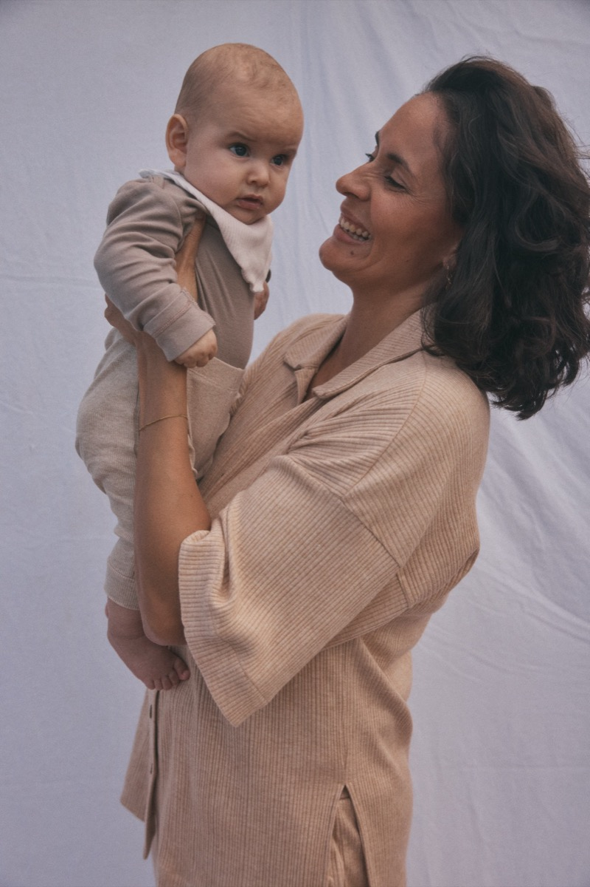
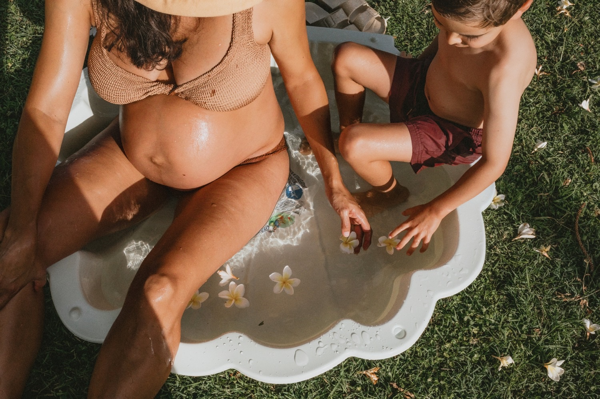
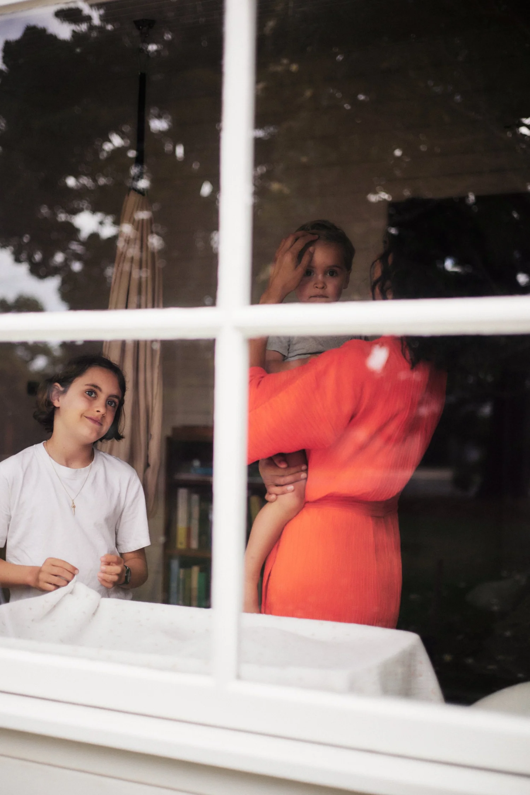
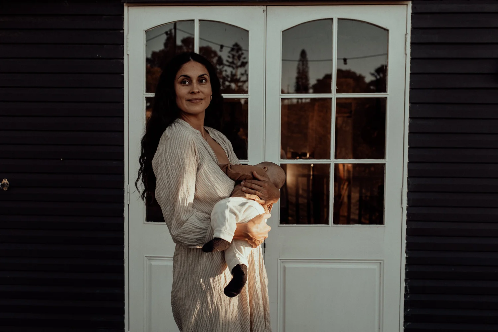

Know your options.
Trust your instincts.
Birth with confidence.
Certified birth doula and parent coach with 13 years of experience supporting families in Byron Bay and worldwide.
How I Came to This Work
My path into birth work began with my own journey into motherhood.
As a mother of three, I know that an empowered birth is rarely the result of chance. It is cultivated through deep preparation, informed decision-making, and being surrounded by people who honour and support your unique vision for birth.
Through my own experiences, I came to understand birth and parenthood not simply as life events, but as profound rites of passage, transformative experiences that shape us long after the day our babies are born. I believe that if we truly honoured this transition into motherhood with the reverence, support, and preparation it deserves, our culture around birth would look very different.
Born in Lübeck and raised between Germany, Guatemala, and Spain, I was shaped by life across continents before eventually making my home between Australia and Europe. Today, I divide my time between Byron Bay and Berlin. Living within different cultures has given me a deep appreciation for the many ways families welcome babies, care for mothers, and honour the journey into parenthood.
This global perspective, combined with my professional training and lived experience as a mother, informs the way I support families today, with warmth, evidence-based education, deep respect for individual choices, and a belief that every woman deserves to approach birth feeling informed, confident, and connected to her own inner wisdom.
Training & Credentials
- Cultural Anthropologist (M.A.)
- Certified Birth Doula CBI (Childbirth International)
- Certified Doula (Dr. Michel Odent)
- Certified End Of Life / Death Doula (Thoughtful Transitions)
- Trained in the Spinning Babies approach to childbirth
- Certified Aware Parenting Coach
- Trained in the Possums & Co evidence-based approach to sleep, breastfeeding & unsettled babies
- Certified Yoga Teacher (BYV)
- Pregnancy & Birth Specialist / Parent Coach at Cleo
Selected Interviews

Mothering The Mother
Mumma Milla · M. Magazine
The Confidence That Comes After 40
The Rara Files
Perinatal Support for Mothers
PBB Media Podcast

iamibu × Nathalie Solis Pérez
iamibu

A Day With… Nathalie Solis Pérez
In A Day Naturopathy
Mother Moments
Interview with Space To Flow
Interview with Nadine Richardson
She Births®